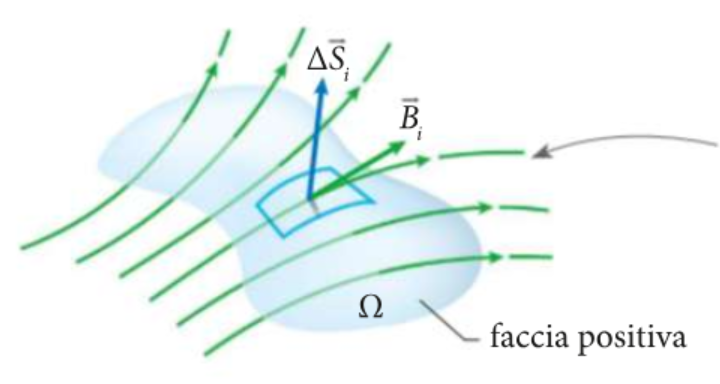
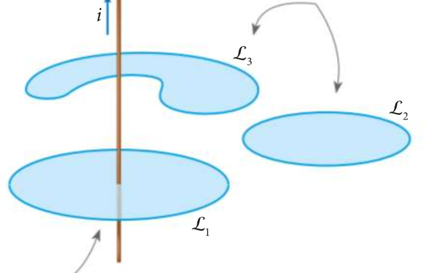
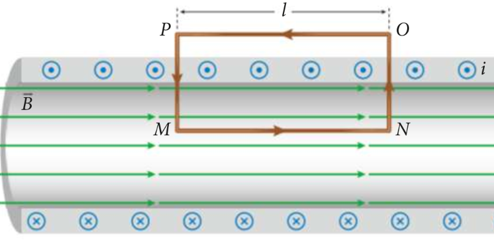

Table of Contents
1. Flusso del campo magnetico
Il flusso magnetico, in fisica e in particolare nel magnetismo, è il flusso del campo magnetico attraverso una superficie; è una grandezza scalare che dipende dall'angolo d'incidenza delle linee di campo con la superficie considerata, dal valore della permeabilità magnetica e dall'area della superficie stessa. Allo stesso modo del flusso elettrico, il suo valore attraverso una superficie curva puo' e ssere approssimato a quello della sommatoria del flusso attraverso le superfici piatte n-esime in cui viene divisa la superficie intera.

il flusso \( \phi \) attraverso la superficie \( \Omega \) del campo magnetico \( \vec(B) \) e' dato dalla seguente sommatoria dei prodotti scalari tra i vettori superficie i-esimi e i vettori campo magnetico corrispondenti.
\[ \phi_{\Omega} (\vec{B}) = \sum_{i=1}^{n} B_i \cdot \Delta S_i \]
L'unita' di misura del flusso del campo magnetico e' il Weber (\( Wb \)), corrispondente a \( 1Wb = 1T \cdot 1m^2 \). Nel caso di superfici piane e campi uniformi il calcolo del flusso del campo magnetico attraverso una superficie si riduce a:
\[ \phi_{\Omega} (\vec{B}) = \vec{B} \cdot \vec{S} = B S \cos{\alpha} \]
1.1. Teorema di Gauss per il flusso del campo magnetico
Il teorema di Gauss per il campo magnetico afferma che il flusso \( \phi \) del campo magnetico \( \vec{B} \) attraverso una superficie chiusa \( \Omega \) e' sempre nullo.
\[ \phi_{\Omega} (\vec{B}) = 0 \]
Intuitivamente, pensando alle linee di campo formate da un campo magnetico si nota come queste siano sempre chiuse, a differenza di quelle formate dall'interazione tra cariche elettriche. Questo e' dovuto al fatto che non si puo' isolare un monopolo magnetico, mentre le cariche si trovano solo in questo stato. Le linee del campo elettrico sono di solito condotte da una carica ad un'altra, mentre quelle del campo magnetico passano da un polo ad un'altro di uno stesso magnete. In presenza di una superficie chiusa attraversata da un campo magnetico, le linee di campo entranti saranno tante quante quelle uscenti, determinando la nullita' del flusso affermata dal teorema di Gauss
2. Circuitazione del campo magnetico
La circuitazione del campo magnetico \( \vec{B} \) lungo una linea chiusa \( L \) e' data dalla seguente formula:
\[ C_{L} (\vec{B}) = \sum_{j=1}^{n} \vec{B_j} \cdot \Delta \vec{l_j} \]
Nel \( SI \) la circuitazione del campo magnetico e' misurata in \( T \cdot m \)
2.1. Teorema di Ampere per la circuitazione del campo magnetico
Il teorema di Ampere relativo alla circuitazione mette in relazione la circuitazione \( C \) lungo una linea \( L \) con le correnti concatenate a tale linea \( i_{tot} \). E' detta corrente concatenata con una linea chiusa \( L \) l'intensita' di corrente elettrica che passa attraverso una superficie che ha \( L \) come contorno.

Data una linea chiusa \( L \) e fissato un verso di percorrenza su di essa, una corrente concatenata e' da considerarsi positiva se il campo da essa generato segue il verso di percorrenza, negativa se non lo segue. La corrente concatenata totale e' definita dalla sommatoria delle correnti concatenate \( i_{tot} = \sum_{k=1}^{n} i_k \). Il teorema di Ampere per la circuitazione lungo una linea chiusa del campo magnetico afferma che:
\[ C_{L} (\vec{B}) = \mu_0 i_tot \]
in cui \( \mu_0 \) rappresenta la permeabilita' magnetica del vuoto, pari a \( \mu_0 = 4,0 \pi \cdot 10^{-7} \frac{N}{A^2} \).
2.1.1. Non conservativita' del campo magnetico
La circuitazione del campo magnetico quindi non e' sempre zero. Questa dipende infatti dalle correnti che circonda. Il lavoro svolto dal campo magnetico lungo una linea chiusa puo' quindi non essere pari a zero, se vi e' almeno una corrente concatenata al percorso considerato. Questo e' sufficiente per affermare che il campo magnetico non sia conservativo, a differenza di quello elettrico.
2.1.2. Dimostrazione del teorema di Ampere
Per semplicita' dimostrativa, supponiamo che vi sia una corrente \( i \) posta sull'asse di una linea chiusa \( L \), circonferenza di raggio \( r \). In questo modo, ad ogni segmento di \( L \) considerato corrisponde, per la legge di Biot-Savart, un vettore campo \( \vec{B} \) di modulo \( B = \frac{\mu_0}{2\pi} \frac{i}{r} \). Possiamo considerare dei piccoli spostamenti \( \Delta l_1 \dots \Delta l_n \) con stessa direzione e stesso verso dei corrispondenti vettori campo magnetico. Questo comporta che l'angolo tra i due vettori sia tendente allo zero e che quindi il loro prodotto scalare sia uguale al loro prodotto.
Dividendo la linea \( L \) in \( j \) tratti, possiamo affermare che in ogni tratto
\[ \vec{B_j} \cdot \Delta \vec{l_j} = B \Delta l_j \]
Per questo motivo possiamo applicare la proprieta' distributiva dell'addizione sul campo magnetico.
\[ C_L (\vec{B}) = \sum_{j=1}^{n} \vec{B_j} \cdot \Delta \vec{l_j} = \sum_{j=1}^{n} B \cdot \Delta l_j = B \sum_{j=1}^{n} \Delta l_j \]
Ma la sommatoria dei tratti infinitesimi costituenti la circonferenza non e' altro che la circonderenza stessa:
\[ \sum_{j=1}^{n} \Delta l_j = 2 \pi r \]
Quindi:
\[ C_L (\vec{B}) = B \sum_{j=1}^n \Delta l_j = 2 \pi r B = 2 \pi r \frac{\mu_0 i}{2 \pi r} = \mu_0 i \]
In questo caso otteniamo la forma del teorema di Ampere nel caso la corrente concatenata sia solo una, ma e' possibile dimostrare anche la sua generalizzazione con \( i_{tot} \).
3. Campo magnetico di un solenoide infinito
Se il solenoide è composto da \(n\) spire per unità di lunghezza, è vuoto all’interno ed è percorso da una corrente di intensità \(i\), il modulo del campo all’interno, lontano dai bordi, soddisfa all’incirca l’equazione
\[ B = \mu_0 n i \]
Tutte queste proprietà, approssimative per un solenoide di lunghezza finita, diventano esatte nel caso ideale di un solenoide infinito. Consideriamo ora un solenoide infinito e una linea chiusa \( MNOP \) come in figura. Possiamo affermare che la circuitazione \( C_{MNOP} \) lungo tale linea possa essere calcolara, per definizione, come
\[ L_{MNOP} = \vec{MN} \cdot \vec{B} + \vec{NO} \cdot \vec{B} + \vec{OP} \cdot \vec{B} + \vec{PM} \cdot \vec{B} \]

- \( \vec{MN} \cdot \vec{B} = \overline{MN} B \) in quanto l'angolo tra i due vettori e' zero (e quindi il loro prodotto scalare e' uguale al loro prodotto)
- \( \vec{NO} \cdot \vec{B} = \vec{PM} \cdot \vec{B} = 0\) in quanto nel loro tratto interno al solenoide il campo magnetico e' perpendicolare ai vettori spostamento (quindi il prodotto scalare vale \( 0 \)) e nel loro tratto esterno al solenoide il campo vale \( 0 \).
- \( \vec{MN} \cdot \vec{B} = 0 \) in quanto il valore del campo magnetico al di fuori del solenoide e' \( 0 \).
Quindi, per definizione, possiamo affermare che \[ C_{MNOP} = \overline{MN} B = l B \]
Considerando invece il teorema di Ampere per la circuitazione del campo magnetico, possiamo affermare che \[ C_{MNOP} = \mu_0 i_{tot} \] In questo caso \( i_{tot} \), essendo la sommatoria di correnti concatenate uguali, vale \( nli \), in cui \( n \) rappresenta la densita \( N/l \) di correnti concatenate nella sezione considerata e \( l \) la lunghezza della sezione stessa. Possiamo quindi concludere che
\[ Bl = \mu_0 nli \implies B = \mu_0 ni \]
con \( n \) rappresentante il numero di correnti concatenate per metro di lunghezza.